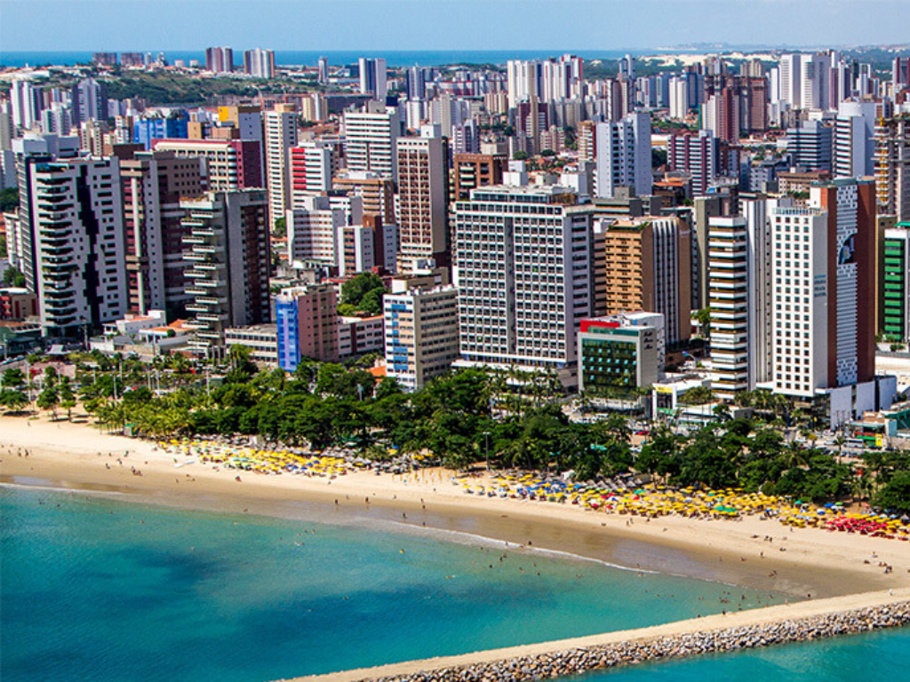

O estado do Ceará está localizado na região Nordeste do Brasil e é conhecido por suas belas praias, clima quente e rica cultura popular. Sua capital é Fortaleza, uma das cidades mais importantes da região e grande destino turístico do país. O Ceará se destaca por atrações naturais como Jericoacoara, famosa por suas dunas, lagoas e paisagens paradisíacas. A cultura cearense é marcada pelo humor, pela música, pelo artesanato e pelas festas tradicionais. A economia do estado é baseada no turismo, comércio, indústria e agricultura, contribuindo para o desenvolvimento do Nordeste brasileiro.

Voltar